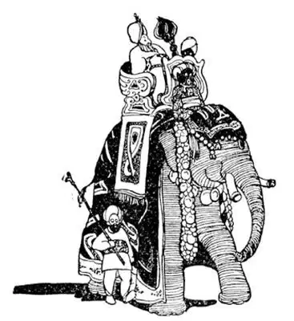
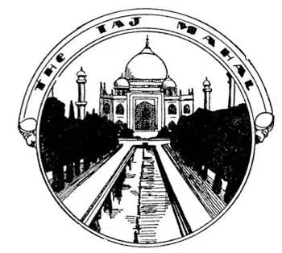

56
Opposite-Feet (continued
)
对面脚踩之地（续）

INDIA is divided into states like the United States and many of these states have separate rulers called rajahs. Many of the rajahs, however, are more interested in showing off and in having a good time than they are in ruling. They love jewels, such as diamonds and pearls, and they collect them as you might collect marbles, though one of their diamonds may be worth a million times what one of your precious marbles is worth. They own some of the largest and finest jewels that have ever been found. We think of diamond and pearl necklaces as something that only women wear, but when the rajahs appear before their subjects or ride in processions, as they love to do, they dress themselves up with their wonderful gems, some of them as big as walnuts, and wear collars of pearls, rubies, sapphires, and emeralds. In such processions a rajah rides on an elephant, which is dressed up too. The rajah sits on top of the elephant under a canopy that is so high in the air he has to use a stepladder to climb up.

A Rajah rides on an elephant which is all dressed up too
邦主坐在也穿了盛装的大象背上
Elephants are considered sacred in India, and even though there are many wild ones, it is against the law to shoot one. So men hunt them, catch them, and tame them without shooting them. Hundreds of men form a long line around the place where there are elephants and beat drums and blow horns to frighten them. The elephants move away from the noise and, unknowingly, toward a pen that is left open to catch them. In this way they are driven by the terrible racket into the pen, which is then closed. After they are caught they must be tamed. This is not an easy job, for some elephants are very dangerous and can easily stamp a man to death. Once tamed, however, an elephant can be used like a camel in Arabia, a horse in Europe, or an automobile, a tractor, or a piece of machinery in our country. An elephant will wind his trunk around a log and load it on a train or ship, much as a machine called a derrick would do.
One of the things a rajah likes best to do is to hunt tigers. The tiger—a huge, orange-colored cat with black stripes—is a fearful creature. He lives in the jungles of India, and when he is hungry he raids villages and kills domestic animals and people. A rajah going forth to a tiger hunt takes good care that he is in no danger. He and a party of friends, with hundreds of servants, go out into the jungle and climb to a safe place in a tree where a platform has been built. The servants then go through the jungle beating pans and drums and anything that will make a noise, keeping up a terrific din to scare the tiger along toward the rajah and his party of friends. When he comes within range they fire upon him from above. They then take his skin home to cover the floors or walls of the rajah’s palace.
There are over a hundred different religions in India but, as I told you in the last chapter, most of the people are Hindus. A Hindu believes his spirit comes back into this World in the shape of an animal or of another person. That is one reason why useful or good animals are treated well. A Hindu thinks that if he is good he will, when he dies, suddenly, in a twinkling, be born again—rich or in the shape of a good animal; if he has been bad, he will, when he returns, be poor or in the shape of a bad animal. When I look into the kindly eyes of my dog who wags his tail, puts out his paw, and whines “m-m-m,” I can almost believe as the Hindu does that some human being, perhaps a rajah, is in his dog body.
On the west side of India is a big city called Bombay, but Bombay does not look much different from any other large city in Europe. The buildings look much like the buildings in London or New York.
But if you travel north from Bombay for about two days you will come to a town with two buildings like none other in the World. This town is called Agra. One building is a tomb, the other is a mosque. The tomb was built by a Mohammedan prince for one of his four wives who was his favorite. It is called the Taj Mahal, and some think it the most beautiful building in the World. I had come half-way round the World to see this sight and had traveled days in such terrific heat that a sunstroke was as much to be feared as a stroke of lightning. I saw the Taj by the full moon and was so busy looking that I stepped into a pool of water up to my knees, and I had hardly clambered out when I stepped off a platform and sprained my ankle. But it was worth it. And yet to me the most beautiful building in the World is not the Taj. It is the Pearl Mosque, which is also at Agra. I don’t know what the buildings in Heaven look like, but I don’t believe they could be more beautiful than the Pearl Mosque.
On the east side of the country is the sacred river of India; it is called the Ganges. It has several mouths and at one of these mouths is Calcutta. Calcutta is in India but most of the mouths of the Ganges are in Pakistan.
Farther up the sacred river is the sacred city of the Hindus. It is called Benares. No one but a Mohammedan may go to the sacred city of Mecca, but any one may go to Benares. Benares is built on the banks of the river, and covering the banks are long stone steps leading down into the river. Hindus come from all over India to bathe in the Ganges at Benares, not to wash away dirt but to wash away sins. They go in about waist-deep and, filling a bowl with the sacred water, pour it over their heads. Especially do they come to the Ganges when they think they are about to die. Good Hindus are not afraid to die. In fact, if they are miserably poor and unhappy they are glad to die, for if their sins are washed away they expect, by dying, they will immediately be changed into the body of a happier creature.

I went half-way round the World to see the Taj Mahal
我环绕地球半圈专程来看泰姬陵
The Hindus do not bury those who die; they burn their bodies on bonfires. Those who die in Benares are burned on the steps that lead down to the river, and so many are burned there that men make a regular business of selling wood for these funeral fires. The richer a man is, the bigger fire he can have when he dies; but often a man is so poor he has not left even enough money to pay for the few sticks of wood necessary to burn his body.
There are so many people in India that often there is not enough food to go around, and though the poor people live on little but a few handfuls of rice a day, thousands upon thousands starve to death for lack of even this little food. The rajahs and well-to-do people look fat and well-fed, but the poor people are usually as thin as skeletons, and as they often wear hardly any clothes, you can see every bone in their lean bodies.
From rajahs with their millions’ worth of jewels to the poor wretch who dies without two sticks of wood to burn his body, that is the “opposite-feet” land.
South of India is an island called Ceylon, where men wear skirts and combs in their hair. Much of our tea comes from there. Near Ceylon are the greatest pearl fisheries i. t. w. W.—greater even than those of the Persian Gulf. Many of the rajahs’ famous pearls have been found there, and even I have a black pearl that came from there. It is supposed to bring good luck whether you wear it or whether you don’t. I don’t.
The Indians are famous magicians, and at Colombo in Ceylon I saw some of their tricks. An Indian placed his wife in a basket, covered it with a shawl, stabbed through it in every direction, and then uncovered her alive and smiling. I saw him put a seed in a flower-pot and while you watched it it grew to a plant. How do they do such things? You can only guess just as every one else does.
【中文阅读】
像美国一样，印度也划分为不同的州，很多州有各自的统治者——叫做“邦主”。然而，许多邦主感兴趣的不是治理国家，而是炫耀自己和尽情享受。 他们喜欢珠宝，比如钻石和珍珠。就像你有可能收集玻璃弹子一样，他们收集珠宝，不过，他收集的其中一个钻石也许比你珍爱的玻璃弹子贵一百万倍。他们拥有迄今为止所发现的最大最好的珠宝。我们认为钻石和珍珠项链只有女士才佩戴。但是，当这些邦主出现在他们的臣民面前，或是参加列队行进的时候——他们就喜欢有这样的机会，他们穿上盛装，佩戴华丽无比的宝石。有的宝石有核桃那么大，衣领上缀有珍珠、红宝石、蓝宝石、绿宝石。在队伍中，邦主骑在一头也盛装打扮的大象上，华盖为其遮挡太阳。因为大象太高了，邦主不得不用一个梯子才能爬上去。
在印度，大象被认为是神圣的。尽管有很多野生大象，但是射杀大象是犯法的。于是，人们就捕猎大象，而不是射杀，捕获后驯化它们。猎象时，数百人把有大象的地方围起来，然后，敲鼓吹号来吓唬它们。为了避开噪声，大象不知不觉走向一个为捕捉它们而有意敞开的围栏。就这样，大象在喧闹声中被赶进了围栏，这时有人马上就把围栏关上。捕获大象后一定要驯化它们。驯象是一件很难的事，因为有些大象非常危险，能轻易将人踩死。然而，一旦驯化，大象就能像阿拉伯的骆驼、欧洲的马、美国的汽车、拖拉机，或一台机器一样被人使用。大象会用它的鼻子缠绕着圆木，像转臂起重机一样，把圆木放到火车或者轮船上。
猎虎是印度邦主最喜欢做的事情之一。老虎——一种橘黄色的，长着黑色条纹的大型猫科动物——是非常可怕的动物。老虎生活在印度丛林中，饥饿时，会袭击村庄，咬死家畜甚至人。邦主前去猎虎时非常小心，要确保自己绝对安全。邦主和他的一帮朋友，带着几百个仆人，离开住处，进入丛林，爬到树上一个安全的地方，那里早已搭建好一个平台。接着仆人们深入丛林，敲盆击鼓以及敲打任何可以发出噪音的东西，持续发出可怕的嘈杂声，吓得老虎朝着国王和他的朋友方向跑去。当老虎进入射程，国王和他的朋友就从平台上向它射击，并把猎杀后的老虎带回去装饰宫殿的地板或者墙面。
在印度有一百多种以上不同的宗教，但是，在上一章我就介绍过，大部分印度人都信仰印度教。印度教徒相信人死后灵魂会回到这个世界，变成一种动物或者另一个人。这就是为什么有用的或有益的动物会受到善待。印度教徒认为，如果他是个好人，那么在他死后的一瞬间，就会投胎成为一个富人，或者成为了一只有益的动物；如果他是个坏人，转世时他就会变成穷人，或者成为有害的动物。当我的狗摇着尾巴，伸出爪子，呜呜呜地叫，我看着它友好的眼神时，我几乎就像印度教徒那样，相信某个人也许是个邦主就在这狗的身体里。
在印度西海岸有个大城市叫孟买，孟买看上去和欧洲任何一个大城市没有多大区别，城市建筑很像伦敦、纽约的建筑。
但是，如果你从孟买往北走两天，就会来到一个城镇，那儿有两栋建筑物，和世界上其他任何建筑物都不一样。这个小镇叫阿格拉。其中一座建筑物是一座陵墓，另一座是清真寺。陵墓是一位伊斯兰教王子给他四位妻子中最喜爱的一位建造的，叫泰姬陵，有些人认为这是世界上最美的建筑。我曾环绕地球半圈专程来看这景观。在旅行的那几天里，天气非常炎热，人们害怕中暑就像害怕被闪电击中一样。我在满月的银光之下看见了泰姬陵。我那么专注地看着，不知不觉竟步入一个水池，水没到膝盖，我刚爬出来，从一个平台上走下来，又扭伤了脚踝。但受伤也是值得的。然而，对我来说，世界上最美的建筑不是泰姬陵，而是珍珠清真寺，它也在阿格拉镇。我不知道天堂里的建筑是什么样的，但我相信，就算是天堂里的建筑也不会比珍珠清真寺更美丽。
印度的圣河，在这个国家的东边，叫做恒河。它有好几个河口，加尔各答在其中一个河口。加尔各答在印度，但大部分恒河河口在巴基斯坦。
在圣河上游有印度教徒的圣城——贝拿勒斯。圣城麦加，唯有伊斯兰教徒可以去，但任何人都可以去贝拿勒斯。贝拿勒斯建在恒河河畔，河岸铺着长长的石阶，石阶向下延伸到恒河。印度教徒从印度各地来到贝拿勒斯，在恒河里沐浴，不是洗去污垢而是洗去罪恶。他们走到齐腰深的地方，舀起一碗圣水，浇到自己的头上。当他们认为自己快要死的时候，就会特地来到恒河。虔诚的印度教徒并不怕死。事实上，如果生活贫穷，痛苦不堪，他们宁愿死去，因为如果他们的罪恶一旦洗去，他们期望通过死亡立刻转世成为一个比以前幸福的人。
印度教徒不埋葬死去的人，而是将尸体放在篝火上焚烧。在贝拿勒斯，死去的人会被放在通向恒河的石阶上焚烧。焚烧的尸体太多了，就有人做起了常规生意，专门出售火葬用的木柴。一个人越富有，他死后焚烧的火堆就越大。但是常有人穷得连火葬用的木头都买不起。
印度人口太多，常常没有足够的食物分配给每个人。尽管穷人一天只需要几把米就可以活下去，但是成千上万的人还是因为缺少一点点粮食就饿死了。邦主和富人都长得肥头大耳，营养充足；而穷人通常是骨瘦如柴。因为穷人经常不穿什么衣服，你能看见他们瘦削身体上的根根骨头。
从拥有价值百万珠宝的邦主，到穷得连火葬自己的两根木柴都没有的可怜人，这就是“对拓之地”。
印度之南有个叫锡兰的岛，岛上的男人穿裙子，头发上插着梳子。我们喝的茶很多产自那里，锡兰附近有世界上最大的珍珠渔业场——甚至比波斯湾的还要大。印度邦主的许多著名的珍珠都产自那里。就连我也有一颗黑珍珠是产自那里。据说珍珠会带来好运，无论你戴不戴它。我不戴珍珠。
印度人是著名的魔术师。在锡兰的科伦坡，我见过他们玩的一些戏法。一位印度人把他的妻子放在一个篮子里，盖上披肩，然后用剑从各个方向刺穿这个篮子，然后掀开披肩，他的妻子毫发无损，还向大家微笑呢。我还看到他放了一粒种子在花盆里，当你看着的时候，它已经长成一株植物了。他们是如何做到的呢？你只能像别人一样去猜测吧。